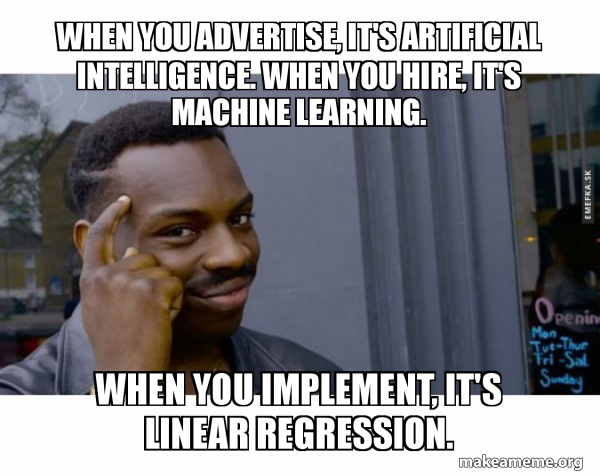

1 Introduction
Since the turn of the century, we have witnessed remarkable advancements and innovations, particularly in statistics, information technology, computer science, and the rapidly emerging field of data science. However, one challenge of these developments is the overuse of buzzwords like big data, machine learning, and deep learning. While these terms are powerful in context, they can sometimes obscure the foundational principles underlying their application.
Every substantive field often has its own specialized metric subfield, such as:
-
Econometrics in economics
-
Psychometrics in psychology
-
Chemometrics in chemistry
-
Sabermetrics in sports analytics
- Biostatistics in public health and medicine
To the layperson, these disciplines are often grouped under broader terms like:
-
Data Science
-
Applied Statistics
- Computational Social Science
As exciting as it is to explore these new tools and techniques, I must admit that retaining these concepts can be challenging. For me, the most effective way to internalize and apply these ideas has been to document the data analysis process from start to finish.
With that in mind, let’s dive in and explore the fascinating world of data analysis together.

1.1 General Recommendations
The journey of mastering data analysis is fueled by practice and repetition. The more lines of code you write, the more functions you familiarize yourself with, and the more you experiment, the more enjoyable and rewarding this process becomes.
-
Readers can approach this book in several ways:
- Focused Learning: If you are interested in specific methods or tools, you can jump directly to the relevant section by navigating through the table of contents.
- Sequential Learning: To follow a traditional path of data analysis, start with the Linear Regression section.
- Experimental Approach: If you are interested in designing experiments and testing hypotheses, explore the [Analysis of Variance (ANOVA)] section.
For those primarily interested in applications and less concerned with theoretical foundations, focus on the summary and application sections of each chapter.
If a concept is unclear, consider researching the topic online. This book serves as a guide, and external resources like tutorials or articles can provide additional insights.
-
To customize the code examples provided in this book, use R’s built-in help functions. For instance:
- To learn more about a specific function, type
help(function_name)or?function_namein the R console. - For example, to find details about the
histfunction, type?historhelp(hist)in the console.
- To learn more about a specific function, type
Additionally, searching online is a powerful resource (e.g., Google, ChatGPT, etc.). Different practitioners often use various R packages to achieve similar results. For instance, if you need to create a histogram in R, a simple search like “histogram in R” will provide multiple approaches and examples.
By adopting these strategies, you can tailor your learning experience and maximize the value of this book.
Tools of statistics
- Probability Theory
- Mathematical Analysis
- Computer Science
- Numerical Analysis
- Database Management
Code Replication
This book was built with R version 4.4.3 (2025-02-28 ucrt) and the packages listed in Table 1.1.
| package | version | source |
|---|---|---|
| abind | 1.4-8 | CRAN (R 4.4.1) |
| agridat | 1.25 | CRAN (R 4.4.3) |
| ape | 5.8-1 | CRAN (R 4.4.3) |
| assertthat | 0.2.1 | CRAN (R 4.4.3) |
| backports | 1.5.0 | CRAN (R 4.4.0) |
| bookdown | 0.45 | CRAN (R 4.4.3) |
| boot | 1.3-32 | CRAN (R 4.4.3) |
| broom | 1.0.10 | CRAN (R 4.4.3) |
| bslib | 0.9.0 | CRAN (R 4.4.2) |
| cachem | 1.1.0 | CRAN (R 4.4.2) |
| callr | 3.7.6 | CRAN (R 4.4.2) |
| car | 3.1-3 | CRAN (R 4.4.2) |
| carData | 3.0-5 | CRAN (R 4.4.2) |
| cellranger | 1.1.0 | CRAN (R 4.4.2) |
| cli | 3.6.5 | CRAN (R 4.4.3) |
| coda | 0.19-4.1 | CRAN (R 4.4.2) |
| colorspace | 2.1-2 | CRAN (R 4.4.3) |
| corpcor | 1.6.10 | CRAN (R 4.4.0) |
| crayon | 1.5.3 | CRAN (R 4.4.2) |
| cubature | 2.1.4 | CRAN (R 4.4.3) |
| curl | 7.0.0 | CRAN (R 4.4.3) |
| data.table | 1.18.6.1 | CRAN (R 4.4.3) |
| DBI | 1.2.3 | CRAN (R 4.4.2) |
| dbplyr | 2.5.1 | CRAN (R 4.4.3) |
| desc | 1.4.3 | CRAN (R 4.4.2) |
| devtools | 2.4.6 | CRAN (R 4.4.3) |
| digest | 0.6.37 | CRAN (R 4.4.2) |
| dplyr | 1.1.4 | CRAN (R 4.4.2) |
| ellipsis | 0.3.2 | CRAN (R 4.4.2) |
| evaluate | 1.0.5 | CRAN (R 4.4.3) |
| extrafont | 0.20 | CRAN (R 4.4.3) |
| extrafontdb | 1.1 | CRAN (R 4.4.3) |
| fansi | 1.0.6 | CRAN (R 4.4.2) |
| faraway | 1.0.9 | CRAN (R 4.4.3) |
| fastmap | 1.2.0 | CRAN (R 4.4.2) |
| forcats | 1.0.1 | CRAN (R 4.4.3) |
| foreign | 0.8-90 | CRAN (R 4.4.3) |
| fs | 1.6.6 | CRAN (R 4.4.3) |
| generics | 0.1.4 | CRAN (R 4.4.3) |
| ggplot2 | 4.0.0 | CRAN (R 4.4.3) |
| glue | 1.8.0 | CRAN (R 4.4.2) |
| gtable | 0.3.6 | CRAN (R 4.4.2) |
| haven | 2.5.5 | CRAN (R 4.4.3) |
| Hmisc | 5.2-4 | CRAN (R 4.4.3) |
| hms | 1.1.4 | CRAN (R 4.4.3) |
| htmltools | 0.5.8.1 | CRAN (R 4.4.2) |
| htmlwidgets | 1.6.4 | CRAN (R 4.4.2) |
| httr | 1.4.7 | CRAN (R 4.4.2) |
| investr | 1.4.2 | CRAN (R 4.4.3) |
| jpeg | 0.1-11 | CRAN (R 4.4.3) |
| jquerylib | 0.1.4 | CRAN (R 4.4.2) |
| jsonlite | 2.0.0 | CRAN (R 4.4.3) |
| kableExtra | 1.4.0 | CRAN (R 4.4.3) |
| knitr | 1.50 | CRAN (R 4.4.3) |
| lattice | 0.22-7 | CRAN (R 4.4.3) |
| latticeExtra | 0.6-31 | CRAN (R 4.4.3) |
| lifecycle | 1.0.4 | CRAN (R 4.4.2) |
| lme4 | 1.1-37 | CRAN (R 4.4.3) |
| lmerTest | 3.1-3 | CRAN (R 4.4.2) |
| lsr | 0.5.2 | CRAN (R 4.4.3) |
| ltm | 1.2-0 | CRAN (R 4.4.3) |
| lubridate | 1.9.4 | CRAN (R 4.4.2) |
| magrittr | 2.0.4 | CRAN (R 4.4.3) |
| MASS | 7.3-65 | CRAN (R 4.4.3) |
| matlib | 1.0.1 | CRAN (R 4.4.3) |
| Matrix | 1.7-4 | CRAN (R 4.4.3) |
| MCMCglmm | 2.36 | CRAN (R 4.4.2) |
| memoise | 2.0.1 | CRAN (R 4.4.2) |
| mgcv | 1.9-3 | CRAN (R 4.4.3) |
| minqa | 1.2.8 | CRAN (R 4.4.2) |
| modelr | 0.1.11 | CRAN (R 4.4.2) |
| munsell | 0.5.1 | CRAN (R 4.4.2) |
| nlme | 3.1-168 | CRAN (R 4.4.3) |
| nloptr | 2.2.1 | CRAN (R 4.4.3) |
| nlstools | 2.1-0 | CRAN (R 4.4.2) |
| nnet | 7.3-20 | CRAN (R 4.4.3) |
| numDeriv | 2016.8-1.1 | CRAN (R 4.4.0) |
| openxlsx | 4.2.8 | CRAN (R 4.4.3) |
| pbkrtest | 0.5.5 | CRAN (R 4.4.3) |
| pillar | 1.11.1 | CRAN (R 4.4.3) |
| pkgbuild | 1.4.8 | CRAN (R 4.4.3) |
| pkgconfig | 2.0.3 | CRAN (R 4.4.2) |
| pkgload | 1.4.1 | CRAN (R 4.4.3) |
| png | 0.1-8 | CRAN (R 4.4.0) |
| ppsr | 0.0.5 | CRAN (R 4.4.3) |
| prettyunits | 1.2.0 | CRAN (R 4.4.2) |
| processx | 3.8.6 | CRAN (R 4.4.3) |
| ps | 1.9.1 | CRAN (R 4.4.3) |
| pscl | 1.5.9 | CRAN (R 4.4.2) |
| purrr | 1.1.0 | CRAN (R 4.4.3) |
| R6 | 2.6.1 | CRAN (R 4.4.3) |
| RColorBrewer | 1.1-3 | CRAN (R 4.4.0) |
| Rcpp | 1.1.0 | CRAN (R 4.4.3) |
| readr | 2.2.0 | CRAN (R 4.4.3) |
| readxl | 1.4.5 | CRAN (R 4.4.3) |
| remotes | 2.5.0 | CRAN (R 4.4.2) |
| reprex | 2.1.1 | CRAN (R 4.4.2) |
| rgl | 1.3.24 | CRAN (R 4.4.3) |
| rio | 1.2.4 | CRAN (R 4.4.3) |
| rlang | 1.1.6 | CRAN (R 4.4.3) |
| RLRsim | 3.1-8 | CRAN (R 4.4.3) |
| rmarkdown | 2.30 | CRAN (R 4.4.3) |
| rprojroot | 2.1.1 | CRAN (R 4.4.3) |
| rstudioapi | 0.17.1 | CRAN (R 4.4.2) |
| Rttf2pt1 | 1.3.14 | CRAN (R 4.4.3) |
| rvest | 1.0.5 | CRAN (R 4.4.3) |
| sass | 0.4.10 | CRAN (R 4.4.3) |
| scales | 1.4.0 | CRAN (R 4.4.3) |
| sessioninfo | 1.2.3 | CRAN (R 4.4.3) |
| stringi | 1.8.7 | CRAN (R 4.4.3) |
| stringr | 1.5.2 | CRAN (R 4.4.3) |
| svglite | 2.2.2 | CRAN (R 4.4.3) |
| systemfonts | 1.3.1 | CRAN (R 4.4.3) |
| tensorA | 0.36.2.1 | CRAN (R 4.4.0) |
| testthat | 3.2.3 | CRAN (R 4.4.2) |
| tibble | 3.2.1 | CRAN (R 4.4.2) |
| tidyr | 1.3.1 | CRAN (R 4.4.2) |
| tidyselect | 1.2.1 | CRAN (R 4.4.2) |
| tidyverse | 2.0.0 | CRAN (R 4.4.2) |
| tzdb | 0.5.0 | CRAN (R 4.4.3) |
| usethis | 3.2.1 | CRAN (R 4.4.3) |
| utf8 | 1.2.6 | CRAN (R 4.4.3) |
| vctrs | 0.6.5 | CRAN (R 4.4.2) |
| viridisLite | 0.4.2 | CRAN (R 4.4.2) |
| webshot | 0.5.5 | CRAN (R 4.4.3) |
| withr | 3.0.2 | CRAN (R 4.4.2) |
| xfun | 0.52 | CRAN (R 4.4.3) |
| xml2 | 1.4.1 | CRAN (R 4.4.3) |
| xtable | 1.8-4 | CRAN (R 4.4.2) |
| yaml | 2.3.10 | CRAN (R 4.4.2) |
| zip | 2.3.3 | CRAN (R 4.4.3) |
#> ─ Session info ───────────────────────────────────────────────────────
#> setting value
#> version R version 4.4.3 (2025-02-28 ucrt)
#> os Windows 11 x64 (build 26300)
#> system x86_64, mingw32
#> ui RTerm
#> language (EN)
#> collate English_United States.utf8
#> ctype English_United States.utf8
#> tz America/Los_Angeles
#> date 2026-10-22
#> pandoc 3.8.3 @ C:\\Program Files\\RStudio\\resources\\app\\bin\\quarto\\bin\\tools/ (via rmarkdown)
#> quarto NA @ C:\\PROGRA~1\\Quarto\\bin\\quarto.exe
#>
#> ─ Packages ───────────────────────────────────────────────────────────
#> package * version date (UTC) lib source
#> bookdown 0.45 2025-10-03 [2] CRAN (R 4.4.3)
#> bslib 0.9.0 2025-01-30 [2] CRAN (R 4.4.2)
#> cachem 1.1.0 2024-05-16 [2] CRAN (R 4.4.2)
#> cli 3.6.5 2025-04-23 [2] CRAN (R 4.4.3)
#> codetools 0.2-20 2024-03-31 [2] CRAN (R 4.4.3)
#> data.table * 1.18.6.1 2026-08-24 [1] CRAN (R 4.4.3)
#> desc 1.4.3 2023-12-10 [2] CRAN (R 4.4.2)
#> devtools 2.4.6 2025-10-03 [2] CRAN (R 4.4.3)
#> dichromat 2.0-0.1 2022-05-02 [2] CRAN (R 4.4.0)
#> digest 0.6.37 2024-08-19 [2] CRAN (R 4.4.2)
#> downlit 0.4.4 2024-06-10 [2] CRAN (R 4.4.2)
#> dplyr * 1.1.4 2023-11-17 [2] CRAN (R 4.4.2)
#> ellipsis 0.3.2 2021-04-29 [2] CRAN (R 4.4.2)
#> evaluate 1.0.5 2025-08-27 [2] CRAN (R 4.4.3)
#> farver 2.1.2 2024-05-13 [2] CRAN (R 4.4.2)
#> fastmap 1.2.0 2024-05-15 [2] CRAN (R 4.4.2)
#> forcats * 1.0.1 2025-09-25 [2] CRAN (R 4.4.3)
#> fs 1.6.6 2025-04-12 [2] CRAN (R 4.4.3)
#> generics 0.1.4 2025-05-09 [2] CRAN (R 4.4.3)
#> ggplot2 * 4.0.0 2025-09-11 [2] CRAN (R 4.4.3)
#> glue 1.8.0 2024-09-30 [2] CRAN (R 4.4.2)
#> gtable 0.3.6 2024-10-25 [2] CRAN (R 4.4.2)
#> hms 1.1.4 2025-10-17 [2] CRAN (R 4.4.3)
#> htmltools 0.5.8.1 2024-04-04 [2] CRAN (R 4.4.2)
#> jpeg * 0.1-11 2025-03-21 [2] CRAN (R 4.4.3)
#> jquerylib 0.1.4 2021-04-26 [2] CRAN (R 4.4.2)
#> jsonlite 2.0.0 2025-03-27 [2] CRAN (R 4.4.3)
#> knitr 1.50 2025-03-16 [2] CRAN (R 4.4.3)
#> lifecycle 1.0.4 2023-11-07 [2] CRAN (R 4.4.2)
#> lubridate * 1.9.4 2024-12-08 [2] CRAN (R 4.4.2)
#> magrittr 2.0.4 2025-09-12 [2] CRAN (R 4.4.3)
#> memoise 2.0.1 2021-11-26 [2] CRAN (R 4.4.2)
#> pillar 1.11.1 2025-09-17 [2] CRAN (R 4.4.3)
#> pkgbuild 1.4.8 2025-05-26 [2] CRAN (R 4.4.3)
#> pkgconfig 2.0.3 2019-09-22 [2] CRAN (R 4.4.2)
#> pkgload 1.4.1 2025-09-23 [2] CRAN (R 4.4.3)
#> purrr * 1.1.0 2025-07-10 [2] CRAN (R 4.4.3)
#> R6 2.6.1 2025-02-15 [2] CRAN (R 4.4.3)
#> RColorBrewer 1.1-3 2022-04-03 [2] CRAN (R 4.4.0)
#> readr * 2.2.0 2026-02-19 [1] CRAN (R 4.4.3)
#> remotes 2.5.0 2024-03-17 [2] CRAN (R 4.4.2)
#> rlang 1.1.6 2025-04-11 [2] CRAN (R 4.4.3)
#> rmarkdown 2.30 2025-09-28 [2] CRAN (R 4.4.3)
#> S7 0.2.0 2024-11-07 [2] CRAN (R 4.4.3)
#> sass 0.4.10 2025-04-11 [2] CRAN (R 4.4.3)
#> scales * 1.4.0 2025-04-24 [2] CRAN (R 4.4.3)
#> sessioninfo 1.2.3 2025-02-05 [2] CRAN (R 4.4.3)
#> stringi 1.8.7 2025-03-27 [2] CRAN (R 4.4.3)
#> stringr * 1.5.2 2025-09-08 [2] CRAN (R 4.4.3)
#> tibble * 3.2.1 2023-03-20 [2] CRAN (R 4.4.2)
#> tidyr * 1.3.1 2024-01-24 [2] CRAN (R 4.4.2)
#> tidyselect 1.2.1 2024-03-11 [2] CRAN (R 4.4.2)
#> tidyverse * 2.0.0 2023-02-22 [2] CRAN (R 4.4.2)
#> timechange 0.3.0 2024-01-18 [2] CRAN (R 4.4.2)
#> tzdb 0.5.0 2025-03-15 [2] CRAN (R 4.4.3)
#> usethis 3.2.1 2025-09-06 [2] CRAN (R 4.4.3)
#> vctrs 0.6.5 2023-12-01 [2] CRAN (R 4.4.2)
#> withr 3.0.2 2024-10-28 [2] CRAN (R 4.4.2)
#> xfun 0.52 2025-04-02 [2] CRAN (R 4.4.3)
#> xml2 1.4.1 2025-10-27 [2] CRAN (R 4.4.3)
#> yaml 2.3.10 2024-07-26 [2] CRAN (R 4.4.2)
#>
#> [1] C:/Users/miken/AppData/Local/R/win-library/4.4
#> [2] C:/Program Files/R/R-4.4.3/library
#> * ── Packages attached to the search path.
#>
#> ──────────────────────────────────────────────────────────────────────